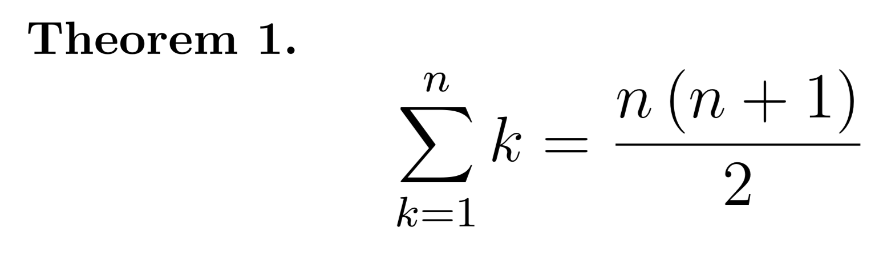

Proof by Induction
The principle of induction is frequently used in mathematic in order
to prove some simple statement. It asserts that if a certain property is valid for
P(n) and for P(n+1), it is valid for all the n
(as a kind of domino effect). A proof by induction is divided into three fundamental steps,
which I will show you in detail:
The principle of induction is often used to demonstrate statements concerning summaries and fractions. So it is
very important that you understand how to write them in LaTeX. For this reason I suggest you visit the
related section of this site that deals with summaries
and fractions.
In order to better understand the principle of induction, I decide to choose a precise statement and demonstrate it step by step using LaTeX.
In order to better understand the principle of induction, I decide to choose a precise statement and demonstrate it step by step using LaTeX.
LaTeX setup
In the header of the LaTeX file we have to specify some feature that we are going to
use in order to prove a generel formula. With
If you want to deepen enumerations from the mathematical point of view, I suggest you visit our page on how to write notes.
\newtheorem{thm}{Theorem} we tell to LaTeX
we are going to write a Theorem and every time we will call a Theorem using \begin{thm},
LaTeX will start a new section named Theorem with a specific enumeration. To be able to write
the proof too, we need to request the amsthm package with \usepackage{amsthm}.
If you want to deepen enumerations from the mathematical point of view, I suggest you visit our page on how to write notes.
Inductive Hypothesis
In this step we have to write the formula we want to proof in LaTeX. In our case I chose the summaries
of n natural numbers starting from 1, which we assume to be equal to a certain formula. Since it is a Theorem
we specify that with
\begin{thm} and after writing it we close the tag with \end{thm}.CODE
\begin{thm}
$$\sum_{k=1}^{n} k = \frac{n \left(n+1\right)}{2}$$
\end{thm}

Base Case
With the base case we start the prove, so we say that to LaTeX with
\begin{proof}.
We must prove that the given statement P(k) is true for the first value of k, that is, k = 1.
In our case the first value of k is 1 and the formula is verified.CODE
\begin{proof}
$$\sum_{k=1}^{1} k = \frac{1\left(1+1 \right )}{2} = 1\left(\cdots\right)$$
\end{proof}
Inductive Step
This is the crucial passage of all the principle. We want to demonstrate that if this statement is valid for n,
it will be also valid for n+1, in symbols: P(n)⇒P(n + 1). So we compute the statement with our assumption, that is,
k = n + 1.
Since it is the end of the proof we write the command
Since it is the end of the proof we write the command
\end{proof} in LaTeX, so that the entire
proof is enclosed between two proof-marks.CODE
\begin{proof}
$$\left(\cdots\right)\sum_{k=1}^{n+1} k = \sum_{k=1}^{n} k + \left(n+1\right) =
\frac{n \left(n+1\right)}{2} + \left(n+1\right) = \frac{\left(n+1\right) \left(\left(n+1\right)+1\right)}{2}$$
\end{proof}
The demonstration ended. We have shown through induction that the theorem is true for P(n) and P(n + 1),
hen for every n. As you can see in the lower left LaTeX has drawn a little square, which in mathematical language means
demonstrated.
Entire File
CODE
\documentclass{article}
\usepackage{amsthm}
\newtheorem{thm}{Theorem}
\begin{document}
\begin{thm}
$$\sum_{k=1}^{n} k = \frac{n \left(n+1\right)}{2}$$
\end{thm}
\begin{proof}
Base Case $\left(n=1\right)$
$$\sum_{k=1}^{1} k = \frac{1\left(1+1 \right )}{2} = 1$$
Inductive Step $\left(n \longrightarrow n+1\right)$
$$\sum_{k=1}^{n+1} k = \sum_{k=1}^{n} k + \left(n+1\right) = \frac{n \left(n+1\right)}{2} + \left(n+1\right) = \frac{\left(n+1\right) \left(\left(n+1\right)+1\right)}{2}$$
\end{proof}
\end{document}
Exercices
1) Write the induction Base Case of this statement: the number 7k - 2k is divisible by 5 starting from k=0.
\begin{proof}
\noindent Base Case k=0:
$$7^{k} - 2^{k} = 5x\rightarrow 7^{0} - 2^{0} = 5$$
5 is divisible by 5, so the Theorem holds when k = 0.
$$\left(\cdots\right)$$
\end{proof}
2) Write the Inductive Step for the Theorem which says that the summation of (3n - 2) is equal to n(3n - 1)/2 for all n ≥ 1.
\begin{proof}
$$\left(\cdots\right)$$
$$\sum_{k=1}^{n+1} \left(3k+2\right) = \sum_{k=1}^{n} \left(3k+2\right) + \sum_{k=1}^{1} \left(3k+2\right) =
\sum_{k=1}^{n} \left(3k+2\right) + \left(3\left(n+1 \right )+2\right) =$$
$$=\frac{n\left(3n-1 \right )}{2} + \left(3\left(n+1 \right )+2\right)$$
\end{proof}